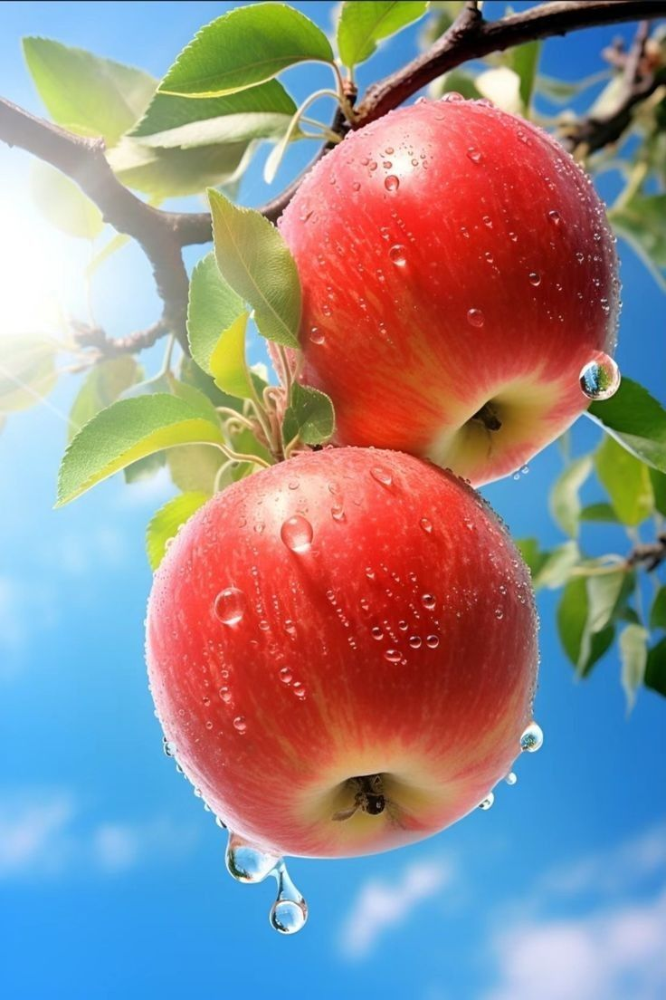
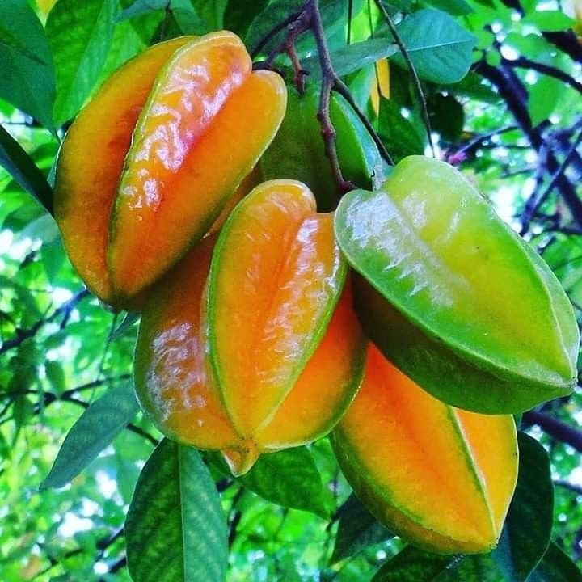
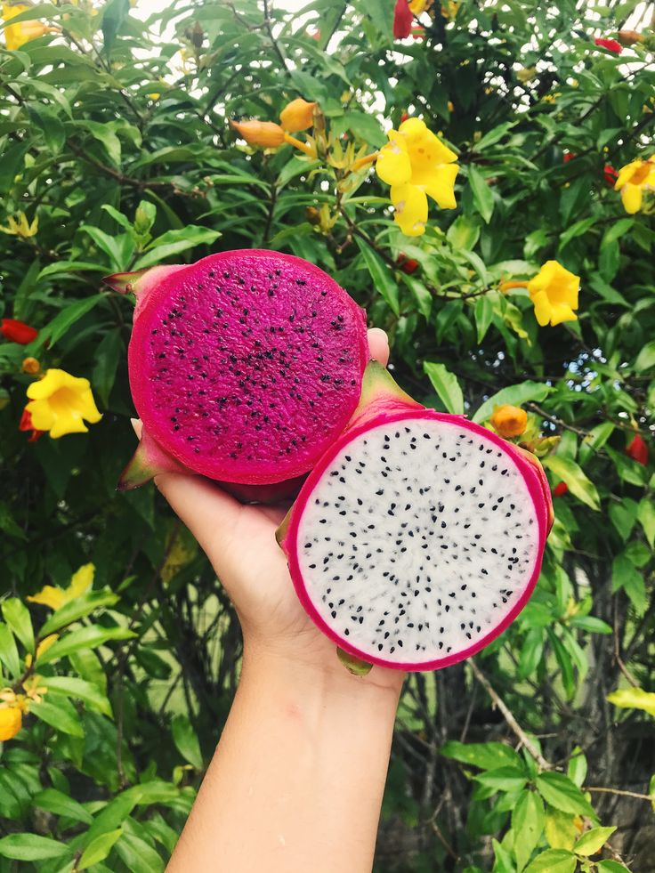
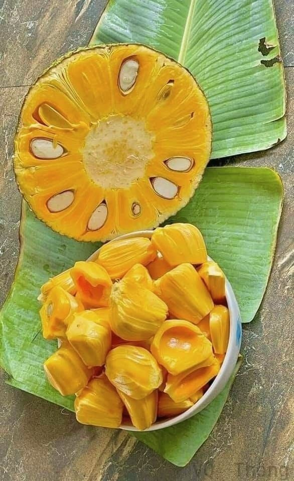

1.Buah Mangga
Nama "mangga" berasal dari bahasa Tamil, mankay, yang berarti man "pohon mangga" + kay "buah". Kata ini dibawa ke Eropa oleh orang-orang Portugis dan diserap menjadi manga (bahasa Portugis), mango (bahasa Spanyol dan Inggris) dan lainnya.
Mangga berasal dari daerah di sekitar perbatasan India dengan Burma, dan telah menyebar ke Asia Tenggara sekitar 1500 tahun yang silam. Buah ini dikenal dalam berbagai bahasa daerah, seperti pêlêm atau poh (Jw.), poh (Bl.), paok (Sas.), oyile (Gor.), dan mamplam (Ac.).
2.Buah Apel

Apel adalah buah yang populer dan dapat dengan mudah ditemukan di pasar tradisional ataupun di pasar swalayan. Apel memiliki rasa yang lezat dan menyegarkan sehingga banyak digemari oleh anak-anak. Tidak hanya itu, ternyata apel juga memberikan sejumlah manfaat kesehatan yang penting bagi tubuh anak-anak.
3.Buah Stroberi

Sebelum menyebar ke banyak negara, stroberi pertama kali diproduksi di Eropa sekitar abad ke-13. Dilansir dari The University of Vermont, saat itu Perancis mulai mencangkok varietas stroberi kayu (fragraria vesca) dari hutan belantara ke kebun. Varietas ini diketahui merupakan jenis stroberi asli pertama di dunia.
Setelah 200 tahun berlalu, tepatnya pada 1500-an, Eropa mulai membudidayakan varietas stroberi lain, yakni stroberi musky (fragraria moschata) di banyak kebun di Eropa. Penyebaran stroberi terus berlanjut. Pada 1600-an, Amerika Utara menyebarkan jenis baru berupa stroberi virginia (fragaria virginiana) ke Eropa. Inggris kemudian ikut menyusul penyebaran buah beri berbentuk hati ini pada akhir 1700-an hingga awal 1800-an. Selama periode ini, stroberi sangat populer di Inggris.
Hal itu bisa dilihat dari banyaknya varietas stroberi terbaru yang bermunculan. Tukang kebun di Inggris disebut berhasil menanam varietas baru stroberi yang mulanya hanya terdiri dari tiga varietas, hingga bertambah menjadi hampir 30 varietas stroberi. Di tempat berbeda, seorang mata-mata dari Perancis diketahui membawa varietas stroberi chili (fragaria chiloensis) dari Chili ke Perancis pada 1714.
4.Buah Kelapa
Tanggal 2 September adalah memperingati hari "Kelapa Sedunia". Buah kelapa telah menjadi bagian tak terpisahkan dari kehidupan manusia sejak ribuan tahun yang lalu. Dikenal sebagai "pohon kehidupan," kelapa telah memainkan peran penting dalam berbagai budaya di seluruh dunia, terutama di daerah tropis
5.Buah Jeruk
Rata-rata berat jeruk adalah 5 ons (140gr). Buah jeruk dilindungi secara eksternal oleh lapisan kulit yang tebal, yang membuatnya cukup tahan untuk diangkut. Konsentrasi air dalam buah, dalam kebanyakan varietas komersial, bervariasi dari 70% hingga 92%, yang tentu saja tergantung pada kelembaban yang ada dan kondisi pohon. Pohon jeruk dan lemon adalah contoh sempurna dari kasus di mana daun tanaman mengambil air dari buah, ketika kebutuhan air untuk dedaunan tidak dapat dipenuhi melalui sistem akar. Selama bulan-bulan musim panas dan di bawah kondisi rata-rata California Selatan, daun lemon mulai mengambil air dari buah-buahan sekitar pukul 6-7 pagi dan terus melakukannya sampai jam 5-6 sore.
6.Buah Belimbing

Belimbing (Averrhoa carambola) adalah buah tropis yang berbentuk bintang ketika dipotong melintang, sehingga dikenal juga sebagai "starfruit." Buah ini memiliki rasa manis-asam dan kaya akan vitamin C, serat, serta antioksidan.
Manfaat buah belimbing antara lain:
1. Meningkatkan daya tahan tubuh berkat kandungan vitamin C yang tinggi.
2. Melancarkan pencernaan karena seratnya membantu memperbaiki sistem pencernaan.
3. Mendukung kesehatan kulit dengan antioksidan yang membantu melawan radikal bebas.
4. Menurunkan risiko penyakit jantung karena dapat membantu mengontrol kadar kolesterol.
5. Membantu menurunkan berat badan karena rendah kalori dan mengenyangkan.
Namun, bagi penderita gangguan ginjal, konsumsinya perlu dihindari karena mengandung asam oksalat yang dapat memperparah kondisi ginjal.
7.Buah Naga

Buah naga merah banyak disukai karena memiliki rasa yang manis, kandungan air yang tinggi, serta tekstur yang lembut. Karakteristik inilah yang membuat buah naga merah kerap diolah menjadi beragam makanan penutup, seperti smoothies, jus, atau es buah.
Kandungan Nutrisi Buah Naga Merah
Dalam 1 buah naga merah dengan berat sekitar 300 gram, terkandung 213 kalori dan beragam nutrisi berikut ini:
10 gram serat
5 gram protein
39 miligram kalsium
42 miligram fosfor
1,2 miligram zat besi
384 miligram kalium
3 miligram vitamin C
8.Buah Nangka

Nangka adalah buah tropis yang berasal dari pohon nangka (Artocarpus heterophyllus), yang umumnya tumbuh di daerah dengan iklim hangat, seperti Asia Tenggara, India, dan Brasil. Buah ini dikenal dengan ukurannya yang besar dan kulit berduri, serta daging buah yang berwarna kuning cerah dan memiliki aroma manis khas.
Berikut adalah beberapa manfaat kesehatan dari buah nangka:
1. Sumber Nutrisi: Nangka kaya akan vitamin C, vitamin A, dan vitamin B kompleks. Selain itu, mengandung mineral seperti kalium, magnesium, dan zat besi, yang penting untuk menjaga kesehatan tubuh.
2. Meningkatkan Sistem Kekebalan Tubuh: Kandungan vitamin C pada nangka berperan sebagai antioksidan, membantu memperkuat sistem kekebalan tubuh dengan melawan radikal bebas dan mengurangi risiko infeksi.
3. Menjaga Kesehatan Pencernaan: Serat dalam nangka bermanfaat untuk melancarkan sistem pencernaan dan mencegah masalah pencernaan seperti sembelit.
4. Menurunkan Risiko Penyakit Jantung: Kandungan potasium dalam nangka membantu menurunkan tekanan darah, yang penting untuk menjaga kesehatan jantung dan mencegah risiko penyakit kardiovaskular.
5. Menjaga Kesehatan Kulit dan Mata: Vitamin A dalam nangka membantu menjaga kesehatan kulit dan mata, serta mencegah kerusakan yang disebabkan oleh radikal bebas.
6. Meningkatkan Energi: Nangka mengandung karbohidrat yang cukup tinggi dan gula alami, sehingga dapat memberikan energi instan dan menjadi pilihan yang baik untuk pemulihan energi setelah aktivitas fisik.
7. Potensi Efek Antikanker: Beberapa senyawa fitonutrien dan antioksidan dalam nangka dipercaya memiliki sifat antikanker yang dapat membantu mencegah pertumbuhan sel kanker, meski penelitian lebih lanjut masih diperlukan.
Buah nangka bisa dimakan langsung, diolah menjadi jus, dikeringkan, atau dimasak dalam berbagai hidangan. Selain itu, biji nangka juga dapat dimasak dan dimakan karena mengandung nutrisi yang bermanfaat bagi tubuh.
Rambutan adalah buah tropis yang berasal dari pohon Nephelium lappaceum. Buah ini dikenal dengan bentuknya yang kecil, kulitnya yang berwarna merah atau kuning, dan permukaan kulit yang berbulu. Nama "rambutan" sendiri berasal dari kata "rambut" karena buah ini memiliki duri lembut yang menyerupai rambut di kulitnya. Daging buahnya berwarna putih atau transparan, berair, dan rasanya manis dengan sedikit asam.
Berikut adalah beberapa manfaat kesehatan dari buah rambutan:
1. Sumber Vitamin C: Rambutan kaya akan vitamin C, yang penting untuk meningkatkan daya tahan tubuh, membantu penyerapan zat besi, serta berperan sebagai antioksidan yang melindungi sel tubuh dari kerusakan akibat radikal bebas.
2. Mengandung Zat Besi: Buah ini mengandung zat besi yang diperlukan untuk mencegah anemia, karena zat besi membantu produksi hemoglobin dalam darah.
3. Menjaga Kesehatan Pencernaan: Kandungan serat pada rambutan bermanfaat untuk kesehatan pencernaan, membantu mencegah sembelit, dan menjaga kesehatan usus.
4. Mengandung Antioksidan: Rambutan mengandung berbagai antioksidan seperti flavonoid, yang memiliki efek antiinflamasi dan dipercaya dapat mengurangi risiko penyakit kronis.
5. Mendukung Kesehatan Kulit: Vitamin C dalam rambutan membantu produksi kolagen, yang penting untuk menjaga elastisitas dan kelembaban kulit, sehingga kulit tampak lebih sehat dan cerah.
6. Mendukung Penurunan Berat Badan: Rambutan rendah kalori tetapi kaya serat dan air, yang dapat membantu memberikan rasa kenyang lebih lama, sehingga cocok untuk dikonsumsi bagi mereka yang ingin menjaga atau menurunkan berat badan.
7. Membantu Pengaturan Gula Darah: Rambutan mengandung senyawa fenolik yang dipercaya dapat membantu mengatur kadar gula darah, meskipun penelitian lebih lanjut masih diperlukan untuk memahami efeknya secara mendalam.
8. Mendukung Kesehatan Tulang: Rambutan mengandung kalsium, fosfor, dan zat besi yang penting untuk kesehatan tulang, serta mencegah risiko osteoporosis di kemudian hari.
Buah rambutan bisa dimakan langsung atau dijadikan campuran dalam salad buah. Selain itu, bijinya juga memiliki manfaat dan sering digunakan dalam obat tradisional, meskipun perlu diolah dengan benar karena biji mentahnya mengandung senyawa beracun.